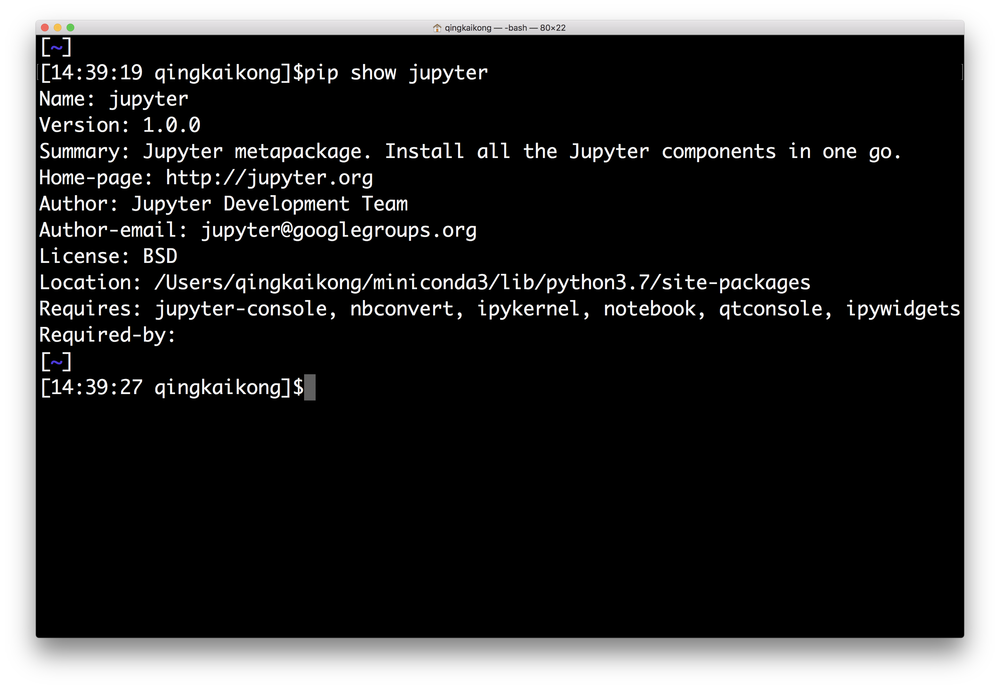

This notebook contains an excerpt from the Python Programming and Numerical Methods - A Guide for Engineers and Scientists, the content is also available at Berkeley Python Numerical Methods.
The copyright of the book belongs to Elsevier. We also have this interactive book online for a better learning experience. The code is released under the MIT license. If you find this content useful, please consider supporting the work on Elsevier or Amazon!
< 1.2 Python as a Calculator | Contents | 1.4 Introduction to Jupyter Notebooks >
Managing Packages¶
One feature makes Python really great is the various packages/modules developed by the community. Most of the time, when you want to use some functions or algorithms, you will find there maybe already multiple packages from the community coded that for you, and all you need to do is to install the packages and use them in your code. Therefore, managing packages is one of the most important skills you need to learn to fully take advantage of Python. In this section, we will show you how to manage the packages in Python.
Managing packages using package managers¶
At the beginning of this book, we installed some packages using pip by typing pip install package_name. This is the most common and easy way these days to install Python packages. Pip is a package manager that automates the process of installing, updating, and removing the packages. It could install packages that published on Python Package Index (PyPI). When we installed the Miniconda installer, it also installed pip for you to use.
First of all, you can use pip help to get help for different commands as shown below.

But the most used commands usually include: the install, upgrade, and uninstall a package.
Install a package¶
To install the latest version of package_name:
pip install package_name
To install a specific version:
pip install package_name==1.5
Pip will install the package as well as the dependencies for you to use.
Upgrade a package¶
To upgrade an installed package to the latest version from PyPI.
pip install --upgrade package_name
or simply
pip install -U package_name
Uninstall a package¶
pip uninstall package_name
Other useful commands¶
There are some other useful commands that you usually use to get information about the installed packages. For example, if you want to get a list of all the installed packages, you can use the command:
pip list

If you want to know more about an installed package, such as the location of the package, the required dependencies, and so on, you can use:
pip show package_name

There are other package managers, like conda that shipped with the Anaconda distribution, but for usage, it is similar to pip, therefore, we won’t talk too much here, you can find more information by reading the documentation.
Install packages from source¶
Occasionally, you need to download the source file for some project that is not in the PyPI, then you need a different way to install the package. After uncompressing the file you downloaded, usually you can see the folder contains a setup script setup.py, and a file named README, which documents how to build and install the module. For most cases, you just need to run one command from the terminal to install the package:
python setup.py install
Note, for the Windows users, you need to run your command from a command prompt window:
setup.py install
Now you know how to manage the packages in Python, which is a big step forward to use Python correctly, and in the next section, we will talk more about the Jupyter notebook that we will use for the rest of the book.
< 1.2 Python as a Calculator | Contents | 1.4 Introduction to Jupyter Notebooks >